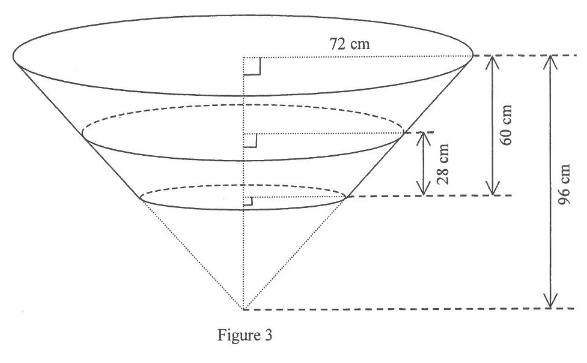

Figure 3 shows a vessel in the form of a frustum which is made by cutting off the lower part of an inverted right circular cone of base radius \(72\text{ cm}\) and height \(96\text{ cm}\). The height of the vessel is \(60\text{ cm}\). The vessel is placed on a horizontal table. Some water is now poured into the vessel. John finds the depth of the water in the vessel is \(28\text{ cm}\).
(a) Find the area of the wet curved surface of the vessel in terms of \(\pi\). (4 marks)
(b) John claims that the volume of water in the vessel is greater than \(0.1\text{ m}^3\). Do you agree? Explain your answer. (4 marks)
